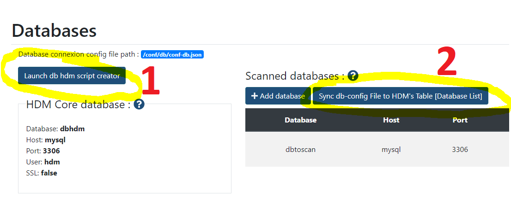
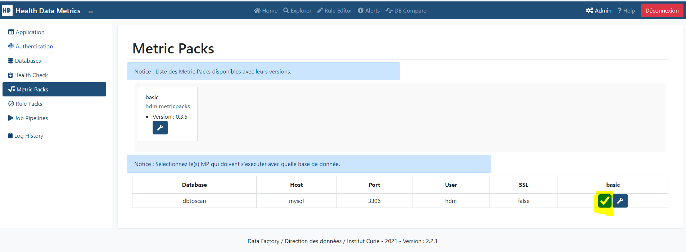
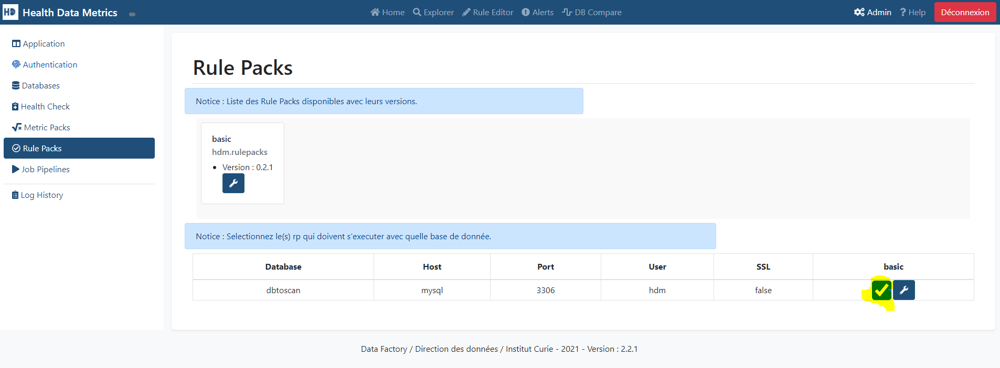
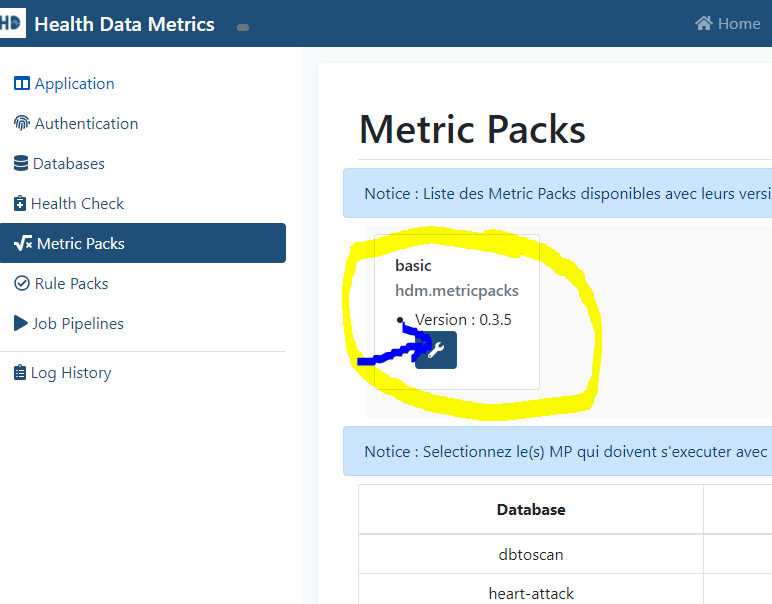
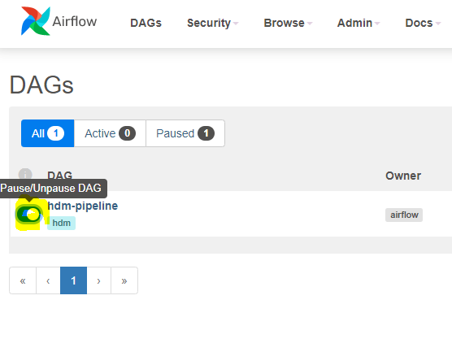
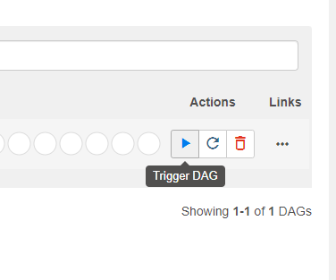

HDM Full Installation
This Tutorial guides you on How to install hdm full stack on your local machine.
⚠️ REQUIREMENTS ⚠️
Software :
- Linux/MacOS 64bit or Windows 10 64bit with WSL2
- Docker
- Docker-compose
- Python 3.9+
Hardware : Minimal🤓
- CPU : 4 Cores - RAM : 16 Go - Storage : 10 Go
Hardware : Recommended 😎
- CPU : 12 Cores - RAM : 32 Go - Storage : 30 Go
In this Tutorial, we are going to install HDM in Full Stack mode. That means that we are going to :
⚠️ Before we start : all comandlines have to be executed at the root folder of the git source repository
1. Launch all the software stack :
- Airflow
- Nexus
- Elasticsearch
- Kibana
- MySQL
- HDM frontend
2. Ingest some dataset to our MySQL database, simulating a dataware that we want to scan.
3. Register our Metric Packs & Rule Packs on Nexus and configure them into HDM.
4. Add an Airflow DAG to run them.
5. Run our HDM Airflow DAG and compute metrics/alerts.
6. Finally, add our Kibana Dashboards and use the Explorer and Alert Dashboard.
1. Launch all the software stack
To run the stack we need :
DockerSee Get DockerDocker ComposeSee Get Docker Compose
We are going to run the docker-compose files :
- docker-compose.yml (HDM primary Stack)
- docker-compose-airflow.yml (Airflow Stack) More INFO Here
sed -i -e 's/\r$//' tutorials/full-installation/*.sh
sed -i -e 's/\r$//' packs/hdm-metric-packs/basic/*.sh
sed -i -e 's/\r$//' packs/hdm-rule-packs/basic/*.sh
bash tutorials/full-installation/launch-stack.sh
When the installation is complete, you should check the different application endpoints :
- http://localhost:80 HDM
- http://localhost:8081 Nexus
- http://localhost:5601 Kibana
- http://localhost:8080 Airflow (User: airflow | Password: airflow)
- tcp://127.0.0.1:3306 MySQL Endpoint
host: 127.0.0.1 | Port: 3306 | User: hdm | Password: password | Database: dbhdm
or:
host: 127.0.0.1 | Port: 3306 | User: root | Password: rootpassword
When you have all done. Let's go to the next step.
2. Ingest a Dataset
We are using the Kaggle API to download our example datasets.
2.1 Kaggle cli installation
In a Client with python 3 on it, run :
pip install kaggle --upgrade
2.2 Kaggle cli login
Type kaggle to check if kaggle is installed.
Setup API credentials : https://github.com/Kaggle/kaggle-api#api-credentials
Run the commandline if needed :
Warning: Your Kaggle API key is readable by other users on this system! To fix this, you can run 'chmod 600 /home/<User>/.kaggle/kaggle.json'
Test with : kaggle datasets list
2.3 Download Heart Attack Dataset
kaggle datasets download rashikrahmanpritom/heart-attack-analysis-prediction-dataset -p ./datasets --unzip
2.4 Run Ingestion Script
We are now going to ingest our Kaggle dataset to our MySQL database.
bash tutorials/full-installation/ingest-data.sh
Data is ingested ! Check it out on mysql://127.0.0.1:3306/heart-attack
3. Metric Pack & Rule Pack Registration
In this step, we are going to register the metric pack and rule pack that are used for HDM.
3.1 Setup Nexus
- In order to setup Nexus we need to get the password :
docker exec -ti nexus sh -c "cat /nexus-data/admin.password"
This will give you the admin password for Nexus
-
Go to http://localhost:8081/ and login as "admin" + [Password from previous command]
-
Do the setup by changing the default admin password and then checkout the [x][Enable Anonymous Access]
3.2 Run Nexus Import Script
⚠️ Change the PASSWORDNEXUS to your Nexus admin password value.
# Nexus User Credentials
export PASSWORDNEXUS="123qwe"
export USERNEXUS="admin"
And run the script :
bash tutorials/full-installation/mp-rp-nexus-register.sh
This script will create a Maven2 Repository on Nexus named : hdm-snapshots
The script then packages into zip files the metric pack & rule pack basic and upload them into the maven repository.
Check if it's ok : http://localhost:8081/#browse/browse:hdm-snapshots
3.3. HDM DB Initialization
We now have to initialize the hdm core db Go to the [Databases] Admin Tab http://localhost/admin.php?tab=databases
Then click in this order on :
- [Launch db hdm script creator]
- [Sync db-config File to HDM's Table [Database List]]

3.4. Metric Pack & Rule Pack Configuration
3.4.1 Enabling Metric Pack / Rule Pack
We Then have to activate our mp & rp on :
- http://localhost/admin.php?tab=metricpacks
- http://localhost/admin.php?tab=rulepacks
 
3.4.2 Edit Configuration Metric Pack / Rule Pack

We edit our metric pack configuration to add :
{
"print_cat_var": false,
"print_mat_num_plot": false,
"limit_enabled": true,
"search_results_limit": 2000000,
"rootResultFolder": "../results/",
"esHost": "elasticsearch",
"esPort": 9200,
"esSSL": false
}
And same for our rule pack with :
dev
4. Airflow DAG
Login to Airflow http://localhost:8080/home with (login : airflow | password: airflow)
4.1 Add env variables
In your previous terminal run these commands :
# Airflow User Credentials
export PASSWORDAIRFLOW="airflow"
export USERAIRFLOW="airflow"
# Add variables
curl -u $USERAIRFLOW:$PASSWORDAIRFLOW -X POST "http://localhost:8080/api/v1/variables" -H "accept: application/json" -H "Content-Type: application/json" -d "{\"key\":\"env\",\"value\":\"dev\"}"
They will create all the airflow environment variables in order for our DAG to run.
4.2 Enable the dag
Toggle the dag :

5. Run the dag
Trigger the dag :

You can check it's execution :
http://localhost:8080/graph?dag_id=hdm-pipeline
6. HDM Visualisation
6.1 Import kibana dashboard
Run the following comandline to import all the dashboards from the Basic Metric Pack into kibana.
curl -X POST http://localhost:5601/api/saved_objects/_import?overwrite=true -H "kbn-xsrf: true" --form file=@packs/hdm-metric-packs/basic/kibana-dashboard/export.ndjson
6.2 Explorer Dashboard
You can explore the different metric pack dashboards from the Explorer.
http://localhost/explorer/wrapper.php
6.3 Alert Dashboard
You can check all the alerts emmitted by the different rule packs from the Alert dashboard :
http://localhost/alert/alert.php
7. Stopping HDM Stack
To stop the stack :
docker-compose -f docker-compose.yml down
docker-compose -f docker-compose-airflow.yaml down -v
docker-compose down -v